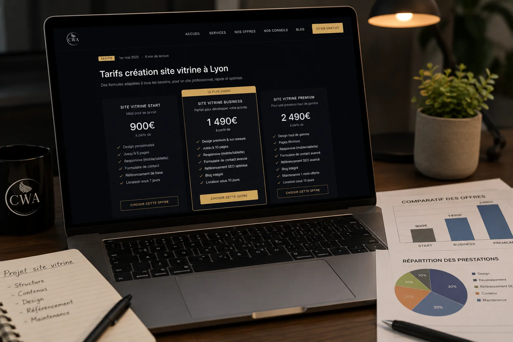

Par Central Web Agency · Mis à jour le

Chez Central Web Agency, une vitrine multipage démarre à 950 € TTC. Une landing page dédiée à une offre démarre à 450 € TTC et un site one-page à 650 € TTC. Ces prix de départ sont ceux de CWA. Le devis final dépend des pages, des contenus et des fonctionnalités à prévoir.
Les tarifs de création chez CWA
| Format | Tarif TTC |
|---|---|
| Landing page | 450 € |
| Site one-page | 650 € |
| Vitrine multipage | 950 € |
| Site administrable | 2 500 € |
| Espace membre | 3 200 € |
| Plateforme métier | 5 000 € |
Les solutions administrables, les espaces membres et les plateformes sont chiffrés sur devis. Vous hésitez sur le bon point de départ ? Consultez le comparatif landing page, one-page et vitrine multipage avant de comparer les prix.
Ce qui fait varier le devis
- Les pages et leur contenu. Indiquez le nombre de prestations à détailler et qui fournit les textes, les photos et la charte graphique.
- La fabrication du site. Précisez le niveau de personnalisation, les tests et les travaux de référencement prévus au lancement.
- Les fonctionnalités. Décrivez chaque action attendue : demande de contact, réservation, modification des contenus ou accès à un espace privé.
- Le transfert et le suivi. Demandez quels accès sont remis, qui gère l’hébergement et comment une demande ultérieure sera chiffrée.
Constructeur en ligne, freelance ou agence
Un constructeur vous laisse généralement assembler les pages vous-même, avec un tarif et des options qui dépendent de la formule choisie. Avec un freelance ou une agence, vérifiez quelles tâches sont prises en charge et qui assurera le suivi. Pour comparer des devis à Lyon, communiquez le même périmètre à chacun. Les tarifs de CWA ci-dessus ne constituent pas un relevé des prix du marché.
Création, hébergement et maintenance
La création est facturée séparément. Après livraison, la maintenance CWA est facultative, dès 39 €/mois pour une vitrine ou 99 €/mois pour un site dynamique. Elle comprend l’hébergement et le suivi technique selon la formule, avec un périmètre de modifications défini.
Exemple illustratif. Pour une vitrine au prix de départ de 950 € TTC et douze mois de maintenance vitrine à 39 €/mois, comptez 468 € de maintenance, soit 1 418 € au total pour ces deux postes. Le devis précise les montants applicables à votre projet.
Les questions à poser avant de signer
- Quel est le prix total de création et quels frais reviendront chaque mois ou chaque année ?
- Quelles pages et fonctionnalités le devis inclut-il ? Qui fournit les contenus ?
- Quels accès et droits sont prévus à la livraison ?
- Que couvrent les retouches ? Comment seront chiffrés les ajouts après validation ?
- Quel délai le devis prévoit-il et de quelles validations dépend-il ?
Ce que la création comprend chez Central Web Agency
La création du site clé en main est facturée en paiement unique, vous êtes propriétaire à 100%, aucun abonnement obligatoire. Design sur mesure, SEO intégré, responsive, 30 jours de retouches offertes, livraison en 1 à 3 semaines.
Le coût et le périmètre du projet sont précisés dans le devis accepté. Les conditions générales de vente détaillent le cadre des délais de livraison et des retouches. Le délai de 1 à 3 semaines est l’estimation indiquée pour un projet simple. Les délais sur mesure sont établis sur devis et les retouches dépendent de la formule et du périmètre convenus. TVA non applicable, art. 293 B du CGI.
Voir les formules clés en main pour vérifier ce que chaque format comprend.